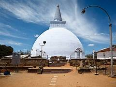

Sri Lanka
Experientical journey will make you a storyteller
A land of myth,legend,history and one of the richest cultures,Sri Lanka is one of the hottest travel destinations and lures adventureres of all kinds.Perhaps you are someone who loves he solitude of nature and steady walks through trails.Maybe you love relaxing by the sea with the sun warming your face and a cool breeze caressing your skin.Or,maybe it's nightlife you crave and a little game of chance at a casino-whatever your thrill is with the best tourist palces to visit Sri Lanka,this island nation has it all.
Ravana's Lanka has a long history a d over 2,000 years of written record.It's been mentioned in the epices Ramayana and Mahabharata too.Over the years,Sri Lanka witnesed occupation by the Portuguese,Dutch and the British and this colonization is evident from the colonial archiecture,Catholicism,surnames and vocabulary that you will noice on your visit here.
Although small,Sri Lanka has 8 UNESCO World Heritage Sites that must be visited as well as religiuos sites,numerous national parks,verdant tea estates and of course,beaches.
Take a scenic train ride past planations and hills and try your hand at blackjack andpoker at one of the many casinos.
Tickle your taste buds with local favourites like rich curries,fragrant polos and the odd-smelling wood apple.Excited yet? You should be! With the best touriest places to visit in Sri Lanka.So much diversity and culture,there really is no place quite like Sri Lanka.If you are still wondering if this is the destination to head to,read on and you will find yourself convinced!
Which are the places to visit in Sri Lanka?
- The Dambulla Cave Temple
- Arugam Bay
- Galle
- Temple of Tooth At Kandy
- Mihintale
- Polonnaruwa Sacred City
- Anuradhapura

.jpg)
.jpg)
.jpg)
What are the famous things to do in Sri Lanka?
- Go Trekking On Adam's Peak
- Kandy to Ella Train Ride
- Water sports at Hikkaduwa
- Climb Sigiriya Rock
- Sport Wild Animals a Yala National Park
- Go Whale watching at Mirissa
Districts and local authorities
| Name of district | Name of Province | Land area |
|---|---|---|
| Kalutara | Western | 9.29 km2 |
| Kandy | Central | 1.917 km2 |
| Kegalle | Sabaragamuwa | 1.685 km2 |
| Jaffna | Northern | 1.576 km2 |